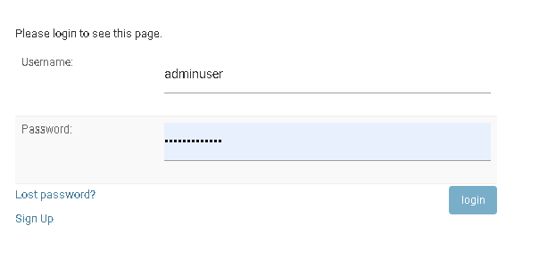
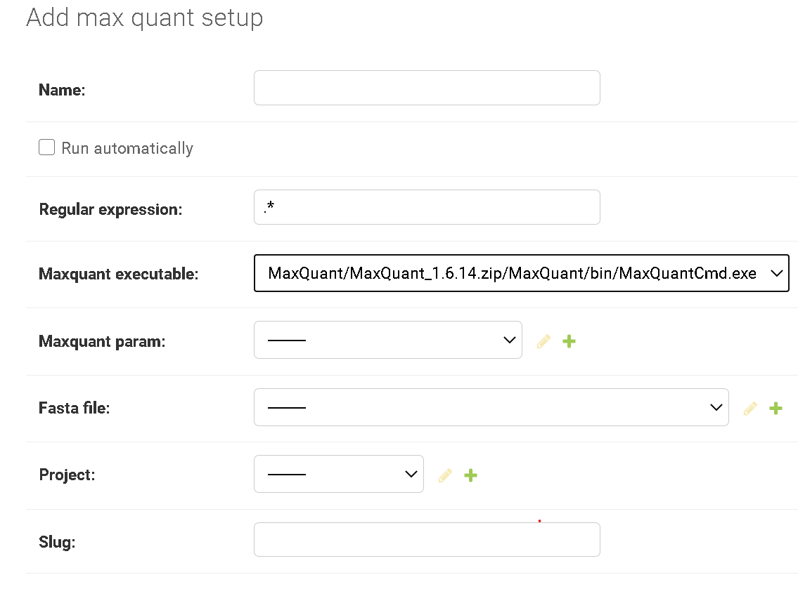

User manual
Please, have a look at the installation instructions and how to start the pipeline server.
Login with an admin account
When you visit the website for the first time you will be redirected to the login page. A new user can register a new account with a valid email address. To visit the admin page the user has to be granted the rights by an admin. If you do not have setup an admin account


To setup a
Setup MaxQuant
To setup MaxQuant you can upload a zipped MaxQuant version. Version 1.6.14 works with Mono and is the recommended version to use with the Proteomics Pipelines server. Please contact the MaxQuant mailing list for information on how to obtain older versions.
Once you downloaded the zip-file you can upload it to the Pipeline server. Go to 'admin/pipelines/maxquantbin/add' and upload the zip file from Admin / Max quant bins / ADD MAX QUANT BIN. If successful the executable will be selectable under Admin / Max quant setups / ADD MAX QUANT SETUP/.

If this is done you can create your first pipeline.
Create first pipeline
1. Create a new project
At least one project has to be set up. Navigate to Admin / Projects / ADD PROJECT and provide a name and a description.
2. Upload Fasta File
A fasta file with protein sequences has to be uploaded.
3. Upload mqpar.xml
A mqpar.xml file has to be provided for each pipeline. It has to be created using the MaxQuant GUI. Only a single .RAW file should be included.
4. Create MaxQuant Setup
The MaxQuant Setup defines a pipeline. It is a combination of a MaxQuant binary, a MaxQuant parameter file (mqpar.xml) and a Fasta file.
Once created you will be able to submit .RAW files to this pipeline.